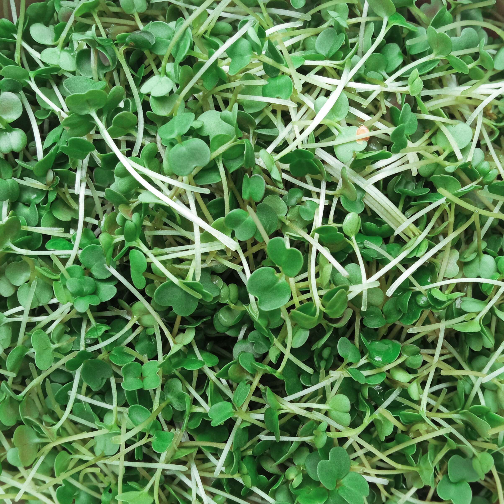
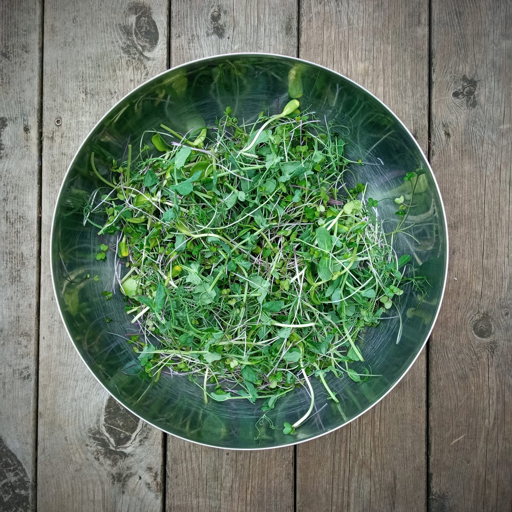

Smak | Näring | Lokalt
Vill du köpa grönt? Du hittar Hembruket på ett flertal REKO-ringar (Alingsås, Floda, Lerum, Partille, Borås),
eller hör av dig så bestämmer vi en dag när du kan komma till gården och hämta upp dina nyskördade skott.



